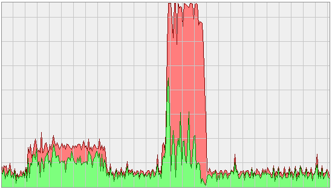

Free and Open Source Verification with VUnit and GHDL¶
Originally posted and commented on LinkedIn.
VUnit is a free and open source (FOSS) unit testing framework for VHDL that supports ModelSim, Rivera-PRO, GHDL, and Active-HDL. GHDL is a FOSS simulator which VUnit started to support 6 months ago but until recently you had to build GHDL yourself from source code to get a version working with VUnit. This was inconvenient and made it harder to get started but with the official release of GHDL 0.33 this is no longer an issue and you can download binary builds directly.
A free simulator opens up a number of possibilities. For example, you can continue to develop new code and interact with your favorite simulator while GHDL is running your regression tests in the background on the other CPU cores. With VUnit you can simply do
$ python run.py -p 7
to start running your test cases in 7 parallel threads and make use of all your processing power. The image above shows the load difference between just running a simulation in my normal simulator (the first load peak) and also running 7 threads of VUnit test cases in the background with GHDL (second 100% load peak).
If you’re new to VUnit and want more information I recommend that you start with this short introduction.